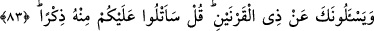
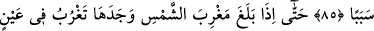
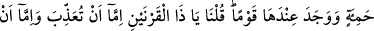
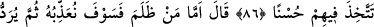
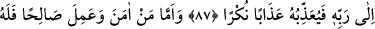
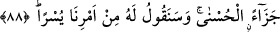

SANA ZÜLKARNEYN
HAKKINDA SORARLAR
83. (Resûlüm!) Sana Zülkarneyn hakkında soru sorarlar. De ki: Size ondan bir
hatıra okuyacağım.
84. Gerçekten biz onu yeryüzünde iktidar ve kudret sahibi kıldık, ona (muhtaç
olduğu) her şey için bir sebep (bir vâsıta ve yol) verdik.
85. O da bir yol tutup gitti.
86. Nihâyet güneşin battığı yere varınca, onu kara bir balçıkta batar buldu. Onun
yanında (orada) bir kavme rastladı. Bunun üzerine biz: Ey Zülkarneyn! Onlara ya
azap edecek veya haklarında iyilik etme yolunu seçeceksin, dedik.
87. O, şöyle dedi: “Haksızlık edeni cezalandıracağız; sonra o, Rabbine
gönderilecek; sonra Allah da ona korkunç bir azap uygulayacak.”
88. “Îman edip de iyi davranan kimseye gelince, onun için de en güzel bir karşılık
vardır. Ve buyruğumuzdan, ona kolay olanını söyleyeceğiz.”
“(Rasûlüm!) Sana Zülkarneyn hakkında soru sorarlar.” Soranlar yahûdilerdir.
Rasûlullah (s.a.)’e imtihan kasdıyla yeryüzünün doğu ve batısını dolaşan kimseyi
sordular. Ya da yahûdîlerin telkîniyle soruyu soran Kureyşliler’dir. İstikbal sıygası,
Allah Teâlâ’dan cevab gelinceye kadar onların bu soruyu sormağa devam edeceklerine
delâlet eder.
Âyetteki şahıs Büyük Zülkarneyn (a.s.)’dır. Mücâhid’in rivâyetine göre zamanında
bütün dünyânın kralı olan Yunanlı İskender b. Feylkûs’tur.
Tarihte bütün dünyaya hükmeden ikisi mü’min, ikisi kâfir dört hükümdar vardır.
Mü’min olanlar, Süleyman ve Zülkarneyn (a.s.); kafir olanlar, Nemrud ve
Buhtunnasr’dır. Mişkâtü’l-envâr’da Buhtunnasr yerine Şeddâd b. Âd adı zikredilir.
Zülkarneyn (a.s.), -daha sonra da zikredileceği gibi- İbrahim (a.s.) zamanında